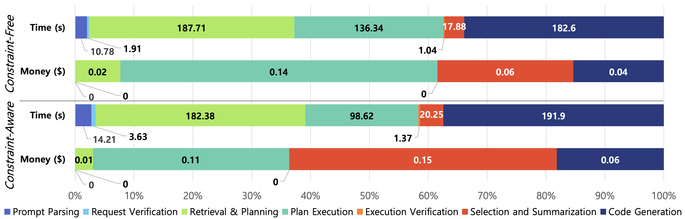

Experimental Setups and Results
| Data Modality | Downstream Task | Dataset Name | # Features | # Train | # Valid | # Test | # Classes | Source | License | Evaluation Metric |
|---|---|---|---|---|---|---|---|---|---|---|
| Main Datasets | ||||||||||
| Image (Computer Vision) | Image Classification | Butterfly Image | 224x224 | 4,549 | 1,299 | 651 | 75 | Kaggle Dataset | CC0 | Accuracy |
| Shopee-IET | Varying | 640 | 160 | 80 | 4 | Kaggle Competition | Custom | |||
| Text (Natural Language Processing) | Text Classification | Ecommerce Text | N/A | 35,296 | 10,084 | 5,044 | 4 | Kaggle Dataset | CC BY 4.0 | Accuracy |
| Textual Entailment | N/A | 3,925 | 982 | 4,908 | 3 | Kaggle Dataset | N/A | |||
| Tabular (Classic Machine Learning) | Tabular Classification | Banana Quality | 7 | 5,600 | 1,600 | 800 | 2 | Kaggle Dataset | Apache 2.0 | F1 |
| Software Defects | 21 | 73,268 | 18,318 | 91,587 | 2 | Kaggle Competition | N/A | |||
| Tabular Clustering | Smoker Status | 22 | 100,331 | 28,666 | 14,334 | 2 | Kaggle Competition | N/A | RI | |
| Higher Education Students Performance | 31 | 101 | 29 | 15 | 8 | Research Dataset (UCI ML) | CC BY 4.0 | |||
| Tabular Regression | Crab Age | 8 | 53,316 | 13,329 | 66,646 | N/A | Kaggle Competition | CC0 | RMSLE | |
| Crop Price | 8 | 1,540 | 440 | 220 | N/A | Kaggle Dataset | MIT | |||
| Graph (Graph Learning) | Node Classification | Cora | 1,433 | 2,708 | 2,708 | 2,708 | 7 | Research Dataset (Planetoid) | CC BY 4.0 | Accuracy |
| Citeseer | 3,703 | 3,327 | 3,327 | 3,327 | 6 | Research Dataset (Planetoid) | N/A | |||
| Time Series (Time Series Analysis) | Time-Series Forecasting | Weather | 21 | 36,887 | 10,539 | 5,270 | N/A | Research Dataset (TSLib) | CC BY 4.0 | RMSLE |
| Electricity | 321 | 18,412 | 5,260 | 2,632 | N/A | Research Dataset (TSLib) | CC BY 4.0 | |||
| Additional Datasets for SELA (Classic Tabular Machine Learning) | ||||||||||
| Binary Classification | Smoker Status | 22 | 85997 | 21500 | 143331 | 2 | Kaggle Competition | N/A | F1 | |
| Click Prediction Small | 11 | 19174 | 4794 | 7990 | 2 | OpenML | ||||
| Multi-Class Classification | MFeat Factors | 216 | 960 | 240 | 400 | 10 | OpenML | |||
| Wine Quality White | 11 | 2350 | 588 | 980 | 7 | OpenML | ||||
| Regression | Colleges | 44 | 3389 | 848 | 1413 | N/A | OpenML | RMSE | ||
| House Prices | 80 | 700 | 176 | 292 | N/A | Kaggle Competition |

Performance comparison across all datasets using the SR, NPS, and CS metrics under (a) constraint-free and (b) constraint-aware settings. Higher scores indicate better results.

Results of (a) ablation study, (b) hyperparameter study, and (c) comparison with SELA (Chi et al., 2024) in the CS metric.
